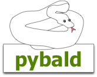

Pybald 0.2.0 documentation
API Reference
«
Errors
::
Contents
::
Models and ORM
»
API Reference
¶
Contents:
Models and ORM
Pybald Core
templates
- template/view handling
action()
- decorator to turn methods into actions
BaseController
- simple base class that pybald controllers can optionally subclass
router
- pybald core, url dispatch, method munging, WSGI app
Utilities
util
- project utilities
«
Errors
::
Contents
::
Models and ORM
»